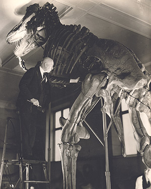
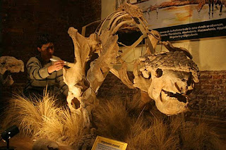

DINOSSAUROS
Dinossauros foram répteis que viveram em nosso planeta durante a Era Mesozoica, sendo os primeiros registros desses animais datados do período Triássico. O termo é usado para se referir a dois grupos de répteis, pertencentes às ordens Saurischia e Ornithischia. Diferentes espécies de dinossauros são conhecidas, as quais variam muito em estrutura do corpo, hábito de vida e tipo de alimentação, sendo reconhecidos animais herbívoros, carnívoros e onívoros. Sem dúvida, a teoria mais conhecida para explicar a extinção dos dinossauros foi a queda de um meteorito em nosso planeta há cerca de 66 milhões de anos.
Quando os dinossauros existiram na Terra?
Os dinossauros foram animais que dominaram o ambiente terrestre durante a Era Mesozoica. Eles surgiram, mais precisamente, no período Triássico, se extinguindo no final do período Cretáceo. Os registros mais antigos de dinossauros passam dos 230 milhões de anos.
Características dos dinossauros
“Dinossauro” é um termo criado pelo biólogo Richard Owen que significa “lagarto terrível”, usado para se referir a répteis pertencentes a duas ordens da subclasse Archosauria que dominaram a terra firme no passado de nosso planeta. Nessa subclasse são reconhecidas cinco ordens, entretanto, são considerados dinossauros apenas os animais das ordens Saurischia e Ornithischia.
